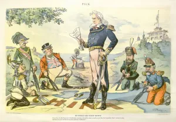
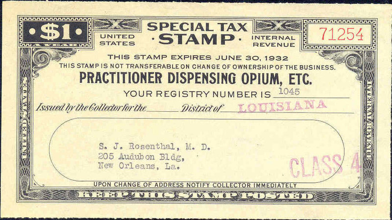

=
The leveraging of drug prohibition by the United States: from continental power to global hegemon.
Today's modern supply side policies evolved from the United States' (U.S) first prohibition laws that began to appear in the 19th century. Puritanical Christian anti-drug and alcohol campaigners were backed by the nation's elites who promoted prohibition policies to resolve the growing race and cultural problems caused by industrialisation and immigration. In effect prohibition became what Boville (2004:15) calls: "...a mechanism for social, economic and cultural control." .
It was a tool that worked in two ways. First it allowed the traditional rural power centres in the U.S. to criminalise emerging urban immigrant groups for their long held cultural traditions. For example many European groups consumed alcohol, Mexicans consumed cannabis, African Americans were portrayed as cocaine addicts (though in reality they used it to to get through hard days working in the agriculture industry) and the Chinese as opium abusers. Today we know that addiction is a health issues that effects 5-10% of the earth's population regardless of race/nationality (reference), but back then it was the beginning of a trend that gradually constructed immigrant populations as immoral and anti-American drug consumers who were a challenge to the 'Manifest Destiny' of the nation (Boville 2014:16). And second, prohibition allowed U.S. elites to obscure the fact that political cronyism and large scale criminality by some of its most successful capitalist families in the land sustained their power (Antonopoulos & Hobbs 31; Fare 273).
By the end of the 19th century, with public opinion increasingly turning against narcotics use, reformers armed with social data inspired by the new scientific methods pushed legal changes that required government intervention. This transformed what had previously been a private matter into one that would now be regulated based on expert medical opinion and government bureaucrats (McAllister 2000:18-19). Concurrently the U.S. found itself gaining more primacy in the international arena leading the expanding alliance of prohibition campaigners, politicians, bureaucrats and capitalists pushing the question of opium prohibition in Asia (ibid.20).
Prohibition was one policy that transferred well to the international arena for three reasons. First, U.S. President Theodore Roosevelt felt spreading prohibition to the Philippines would project the 1898 U.S. invasion of that country in a positive light: as a civilising mission. Second, it would also play well with the Chinese who were upset with British control of the opium trade in their country.

And the U.S. felt that it could leverage this with its prohibition stance to gain access to the Chinese market that had been cornered by the British and opium sales (Buxton 2006:32,33). Third, with no domestic opium industry to hurt, the U.S. pushed on with its policy unhindered by national politcs (McAllister 2000:27). By 1909 the U.S. had achieved the first part of its a goal with the holding of the Shanghai Conference.
shanghia 1909
The Shanghai conference was critical for the development of international prohibition for several reasons despite the fact it had no binding powers on the attendees. Buxton (2006:35) argues that first it established the trend for further follow up conferences while in the process allowing the forces behind U.S. interest in prohibition to define and limit the discussion. In the process institutionalising a rational of control that lasts till today: narcotics use, especially opium, restricted to legitimate medical reasons and reduction of illegal sources through supply side reduction (bid.).
The first binding agreement was reached between a small number of countries at the Hague in 1912. Boville (2004:19) notes the significance for national sovereignty and democracy globally by pointing out that prohibition laws shaped by U.S. morality and racial prejudices were now passing, and continue to do so today, through national legislatures without debate. But perhaps the country that it effected the most at this stage was the U.S. in terms of domestic prohibition.
Obliged by the Hague treaty the U.S. in 1914 passed the Harrison act; which was significant due to the expansion of power by the federal government that was required for it to be put in place and the sectors it benefited.

The act restricted opiate and cocaine dispensation to registered medical professions and created the first criminal penalties for contravention (Boville 2004:20). A move welcomed by the medical industry as it gave them a virtual monopoly on sales in the U.S. To enforce the law the Internal Revenue Service was originally given the role though it ended up in the hands of the Federal Bureau of Narcotics created by congress in the 1930s (Abadinsky 2011:43).
More importantly, as a tool of social control it continued to be essential for maintaining national cohesiveness in a post-World War I (WW I) U.S. marked by economic depression and communism's growth. Indeed, as the problems in the U.S. evoloved so to did the nature of the drug threath. In Europe, with race not such an issue, we saw the narrative change to include ideologies and external threats. Therefore in the run up to WW I it was the German Keiser using drugs to underminign his enemies' armies, while during the interwar years it was the communists before the Germans re-appeared later on with the Japanese. Once this new narative spread to the U.S. it allowed local governments to, in effect, regulate society through anti-drug propaganda that demonised foreign ideas that threatened capitalism (Buxton 2006:46-47).
The association of drugs with communism that spread though the U.S. in the aftermath of WW I also proved beneficial to prohibition in the international arena. The U.S. continued to promote prohibition claiming foreign enemies were behind supply in the United States though its real aim was to help it overtake its European rivals in capturing the Asian market (Boville 2004:22,24). As John Collins (2014:9) notes the U.S. further institutionalised its model with the creation of the Intentional Control Board, attached to the UN, after World War II to supervise legal opium production and the 1961 Single Convention on Narcotic Drugs which codified into international law their approach. In terms of legal production is was a success. Statistics show that during the period 1907 to 1934 global opiate production dropped 82% to 16,653 tons in 1934. All possible because for the first-time national governments handed judicial power to an international institution (Buxton 2006:43-46). Concurrently the trade in illicit supplies increased as licit supplies were reduced (Collins 2014:9). Nevertheless the U.S. would continue to promote prohibition with the biggest change coming in the late 1960s.
References:
- Abadinsky, Howard. Drug Use and Abuse: A Comprehensive Introduction. Belmont: Wadsworth Engage Learning, 2011.
- Boville, Belén. The Cocaine War: In Context: Drugs and Politics. New York: Algora Pub., 2004.
- Buxton, Julia. The Political Economy of Narcotics: Production, Consumption and Global Markets. Black Point, Canada: Fernwood Pub., 2006.
- Collins, John, ed. Ending the Drug Wars. www.lse.ac.uk/IDEAS. Group on the Economics of Drug Policy, May 2014.
- Mosaddeq Ahmed, N. (2012) "Capitalism, covert action and state terrorism: Toward a politcqal economy of the dual state.", in Wilson, E. M. (ed), The dual state: parapolitics, Carl Schmitt and the national security complex, International and comparative criminal Justice, Farnham, Surrey, England ; Burlington, VT, Ashgate.
- McAllister, William B. Drug Diplomacy in the Twentieth Century: An International History. London: Routledge, 2000.